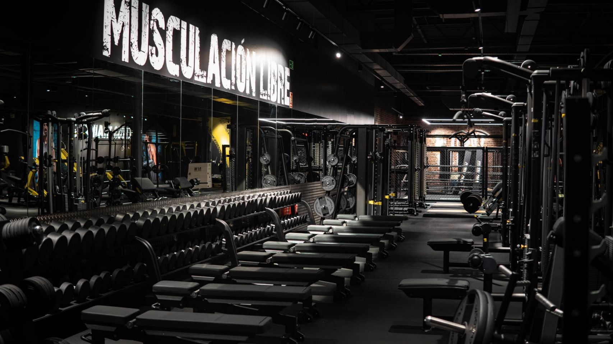
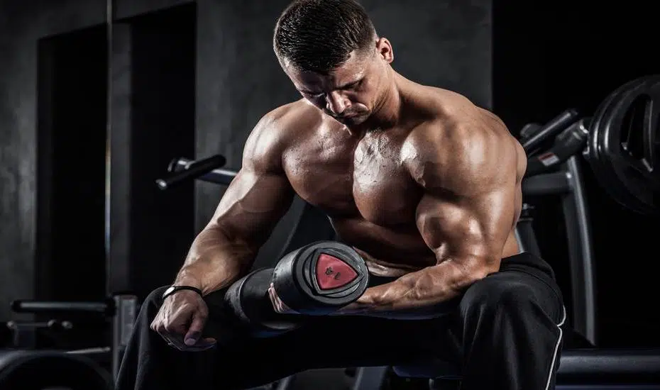
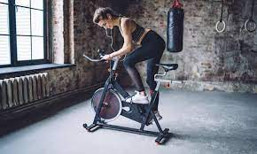
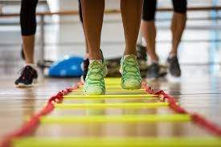

<!DOCTYPE html>
<html></html>
<head></head>
<title></title>
<body></body>
<h1>BIENVENIDOS A GIMNASIO MG</h1>
<h2>Tu lugar de entrenamiento</h2>
<h3>En este lugar encontraras ayuda para lograr tus objetivos</h3>



<h3>Musculacion</h3>

<p>La musculación es una disciplina que tiene como objetivo desarrollar y mantener la masa muscular de los usuarios a través de ejercicios físicos. Aumenta el volumen muscular, la fuerza, la resistencia, la potencia, la explosividad y la resistencia del cuerpo.</p>
<h3>Spining</h3>

<p>El principal objetivo del programa spinning es conseguir una mejora general de la condición física y mental de quién lo práctica, mostrando esa conexión entre la mente y el cuerpo que permite obtener el máximo beneficio de la actividad física.</p>

<h3>Funcional</h3>

<p>Los ejercicios de entrenamiento funcional tienen como objetivo que los músculos trabajen juntos y no de forma aislada, y que se preparen para las tareas diarias, simulando los movimientos comunes que puedes hacer en tu casa, en el trabajo o en la práctica de cualquier deporte.</p>